Vi Sỏi Phế Nang
I. Đại cương
– Sỏi phế nang (pulmonary alveolar microlithiasis, PAM) là bệnh phổi hiếm gặp, đặc trưng bởi các vi sỏi calci phosphat lắng đọng lan tỏa trong lòng phế nang.
– Dịch tễ: Một số loạt ca ghi nhận tuổi phát hiện thường gặp là 4–9 ở Nhật Bản và 30–50 ở các nước phương Tây; bệnh có thể gặp ở nhiều lứa tuổi và chưa có ưu thế giới nhất quán. Phần lớn người bệnh không có triệu chứng hoặc chỉ biểu hiện nhẹ dù tổn thương hình ảnh lan rộng; sự không tương xứng giữa lâm sàng và hình ảnh là điểm thực hành quan trọng.
– Cơ chế bệnh sinh: Bệnh liên quan đến đột biến mất chức năng hai alen gen SLC34A2, di truyền lặn trên nhiễm sắc thể thường:
+ Gen SLC34A2 mã hóa protein vận chuyển natri–phosphat NaPi-IIb ở tế bào biểu mô phế nang type II; rối loạn chức năng protein này làm giảm thải phosphat vào lòng phế nang.
+ Phosphat tích tụ kết hợp với calci, tạo thành các vi sỏi calci phosphat và tăng lắng đọng theo thời gian. Rối loạn chủ yếu khu trú tại phổi; nồng độ calci và phosphat huyết thường không tăng.
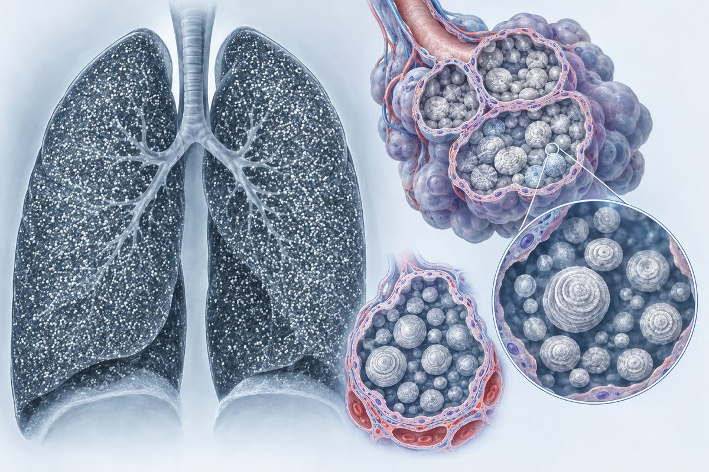
– Đặc điểm mô bệnh học: Vi sỏi nằm và phát triển trong lòng phế nang, có cấu trúc nhiều lớp đồng tâm:
+ Vi sỏi thường có kích thước 0,01–0,03 mm, hình tròn, bầu dục hoặc không đều; gồm nhân trung tâm vô định hình và các lớp calci hóa bao quanh.
+ Ở giai đoạn sớm, vách phế nang có thể còn tương đối bảo tồn. Khi bệnh tiến triển, vách phế nang dày lên do xơ hóa mô kẽ; đôi khi có đại bào dị vật.
– Lâm sàng:
+ Khi có triệu chứng, người bệnh thường bị khó thở tăng dần, lúc đầu khi gắng sức, và ho khan. Khi tổn thương tiến triển, chức năng hô hấp có thể giảm kiểu hạn chế, kèm giảm khả năng khuếch tán carbon monoxide (DLCO).
+ Một số người bệnh tiến triển đến xơ hóa phổi, suy hô hấp mạn và tăng áp phổi, có thể kèm tím tái, ngón tay dùi trống và tâm phế mạn. Vi sỏi có thể tiếp tục hình thành và tăng kích thước, nhưng tốc độ tiến triển khác nhau giữa các người bệnh.
– Cạm bẫy: Đã có báo cáo người bệnh sống 48 năm sau chẩn đoán; đây là ghi nhận ở cá thể, không phải mốc tiên lượng chung.
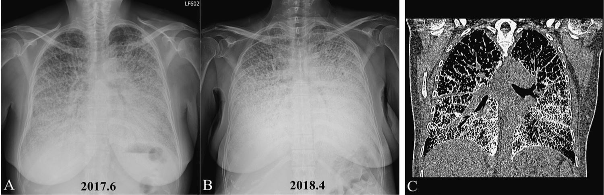
© Chẩn Đoán Hình Ảnh Xray.vn
II. Chẩn đoán x-quang
– Đặc điểm hình ảnh: Biểu hiện thay đổi theo mức độ lắng đọng vi sỏi trong phế nang và mô kẽ:
+ Đặc trưng là các vi nốt vôi hóa đậm độ cao, lan tỏa hai phổi, thường tương đối đối xứng và rõ ở vùng giữa, vùng dưới. Khi dày đặc, các nốt tạo hình ảnh bão cát (sandstorm appearance).
+ Nốt thường bờ rõ, kích thước dưới 1 mm; ở vùng thấp của phổi, đậm độ tổn thương có thể tăng hơn so với vùng cao.
+ Khi các nốt chồng lấp dày đặc, nhu mô phổi tạo đám mờ lan tỏa khá đồng nhất, làm mờ bờ tim và vòm hoành theo dấu hiệu xóa bờ (silhouette sign).
– Cạm bẫy: Không khẳng định ưu thế đậm độ ở vùng thấp là do vi sỏi lắng theo trọng lực hoặc tưới máu đáy phổi; cơ chế của phân bố này chưa được xác lập chỉ từ hình ảnh X-quang.
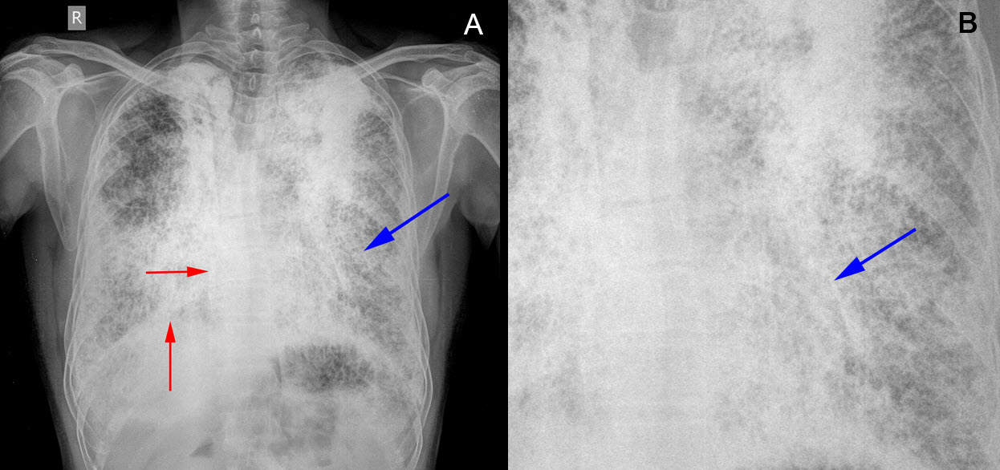
– Màng phổi có thể dày hoặc vôi hóa khi bệnh tiến triển:
+ Dấu hiệu đường màng phổi đen (black pleural line) là dải thấu quang mảnh giữa thành ngực và nhu mô phổi vôi hóa, có giá trị gợi ý PAM. Trên CLVT, dải này có thể tương ứng với các biến đổi dạng nang nhỏ dưới màng phổi hoặc một lớp tỷ trọng mỡ mỏng giữa xương sườn và nhu mô vôi hóa.
+ Dày hoặc vôi hóa màng phổi do di chứng lao thường khu trú, có thể kèm các dấu di chứng nhu mô; không giải thích được các vi nốt vôi hóa lan tỏa hai phổi của PAM.
+ Tràn dịch màng phổi khu trú thường tạo đám mờ dạng thấu kính ở ngoại vi, khác với dải thấu quang của đường màng phổi đen; siêu âm hoặc CLVT có thể xác định bản chất dịch.
+ Khi X-quang chưa đủ rõ, CLVT ngực lát mỏng giúp khảo sát phân bố vi sỏi và các biến đổi dưới màng phổi; đây là đánh giá hình thái, không phải quan sát trực tiếp ở cấp độ vi cấu trúc.
– Cạm bẫy: Đường màng phổi đen là dấu hiệu gợi ý, không đặc hiệu tuyệt đối; không nên quy dấu hiệu này chỉ cho dày màng phổi hoặc vôi hóa màng phổi.
=> Case lâm sàng:
=> Case lâm sàng 1:
=> Case lâm sàng 2:
III. Chẩn đoán CLVT
– Đặc điểm hình ảnh: Các dấu hiệu thay đổi theo mức độ lắng đọng vi sỏi và tổn thương mô kẽ:
+ Các vi nốt vôi hóa đậm độ cao, thường dưới 1 mm, lan tỏa hai phổi; có thể phân bố dưới màng phổi, quanh bó mạch–phế quản và dọc vách liên tiểu thùy. Tổn thương thường rõ ở các vùng sau của thùy dưới và vùng trước của thùy trên.
+ Đám mờ kính mờ (ground-glass opacity) có thể gặp, nhất là khi vi sỏi còn nhỏ hoặc chưa vôi hóa rõ. Kiểu hình lát đá (crazy-paving pattern) hình thành khi dày vách liên tiểu thùy và các đường trong tiểu thùy chồng lên nền kính mờ.
+ Vách liên tiểu thùy có thể dày và vôi hóa; trên cửa sổ trung thất, vôi hóa có thể thấy dọc theo các vách. Xơ hóa kẽ tiến triển có thể kèm dày dưới màng phổi, dạng lưới hoặc giãn phế quản co kéo.
+ Khí phế thũng cạnh vách và các nang nhỏ dưới màng phổi có thể xuất hiện dưới dạng vùng giảm đậm độ ngoại vi; không nên quy kết các dấu hiệu này mặc nhiên do tắc nghẽn tiểu phế quản.
+ Vôi hóa màng phổi có thể gặp khi tổn thương kẽ dưới màng phổi tiến triển, nhưng ít gặp ở lần chẩn đoán ban đầu. Đường màng phổi đen (black pleural line) có thể tương ứng trên CLVT với các biến đổi dạng nang nhỏ dưới màng phổi hoặc một dải tỷ trọng mỡ mỏng giữa xương sườn và nhu mô vôi hóa.
– Cạm bẫy:
+ Kiểu hình lát đá không đặc hiệu cho PAM và không đồng nghĩa với ứ đọng phế nang; cần đánh giá cùng các vi nốt vôi hóa và phân bố tổn thương.
+ CLVT độ phân giải cao (HRCT) là phương tiện hình ảnh có giá trị nhất để phát hiện và đánh giá phạm vi tổn thương; lựa chọn liều thấp tùy chỉ định và cần bảo đảm chất lượng ảnh. CLVT mô tả hình thái, không quan sát trực tiếp vi sỏi ở cấp độ vi cấu trúc.
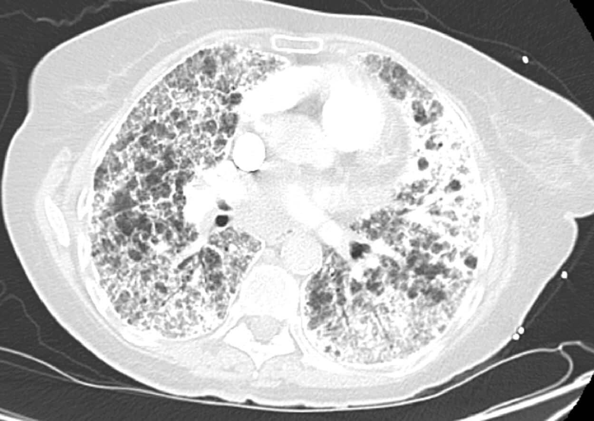
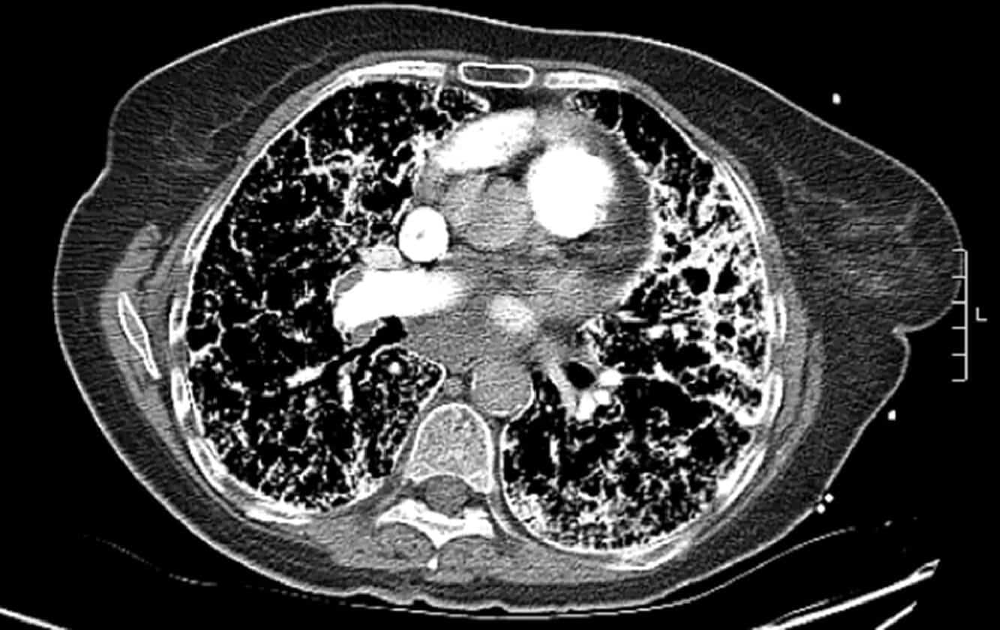
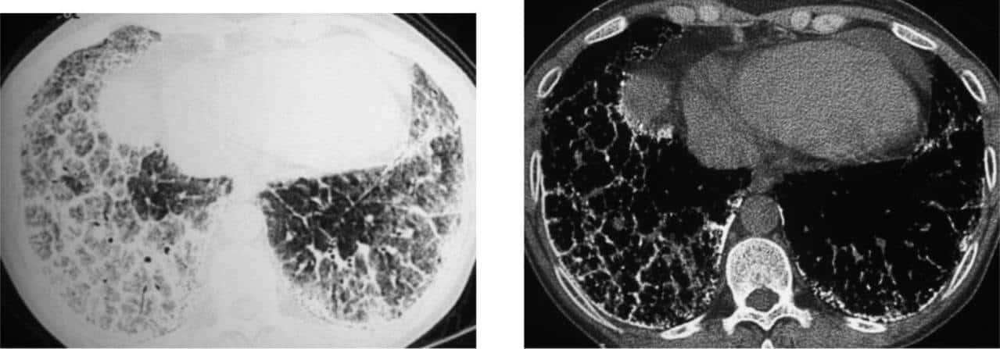
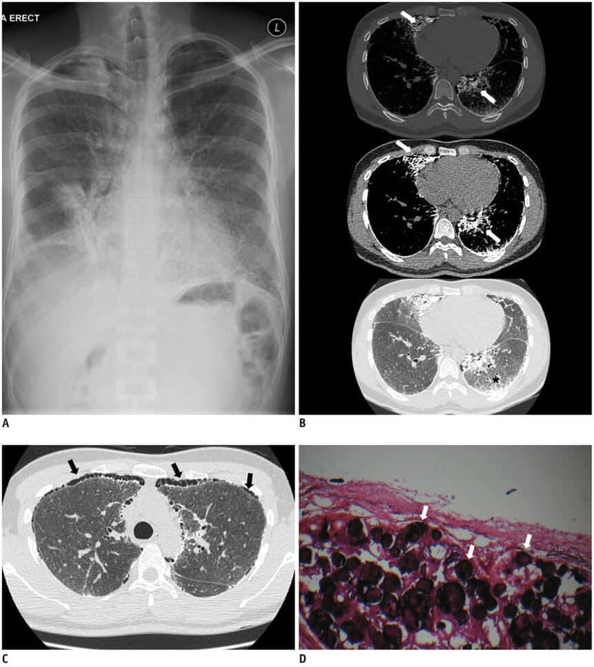
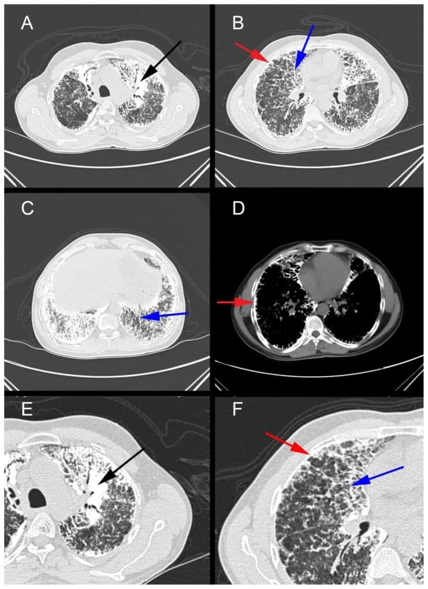
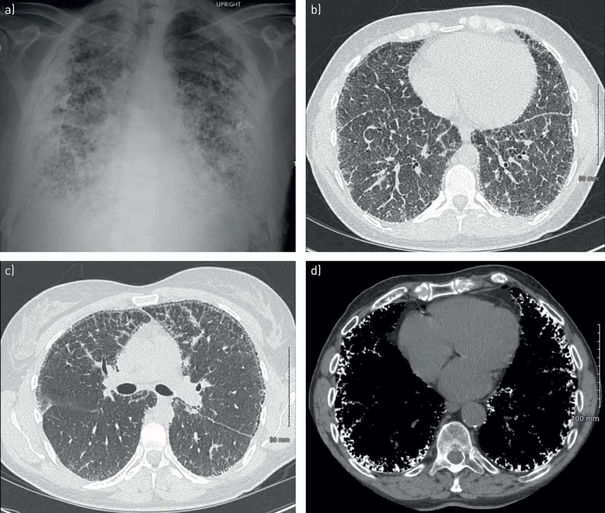
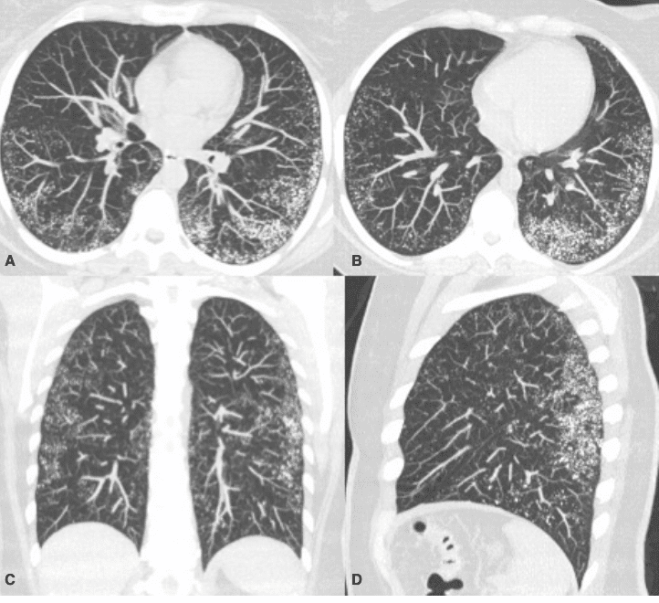
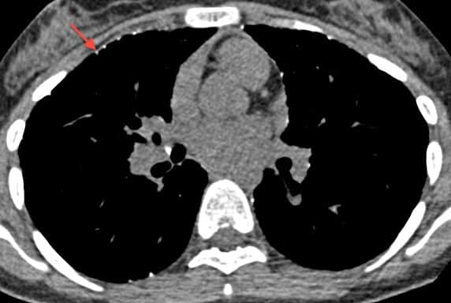
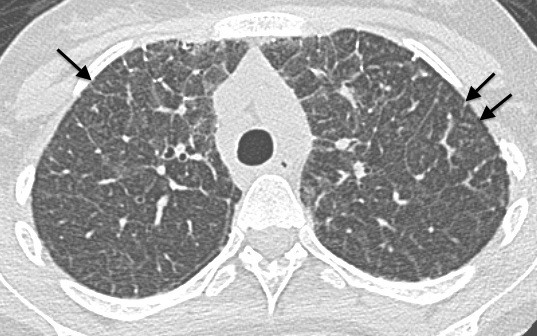
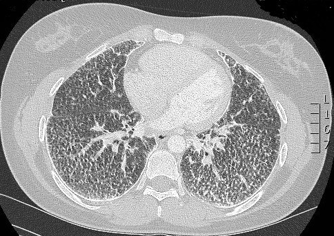
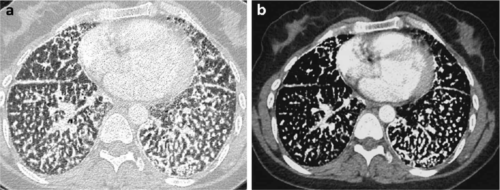
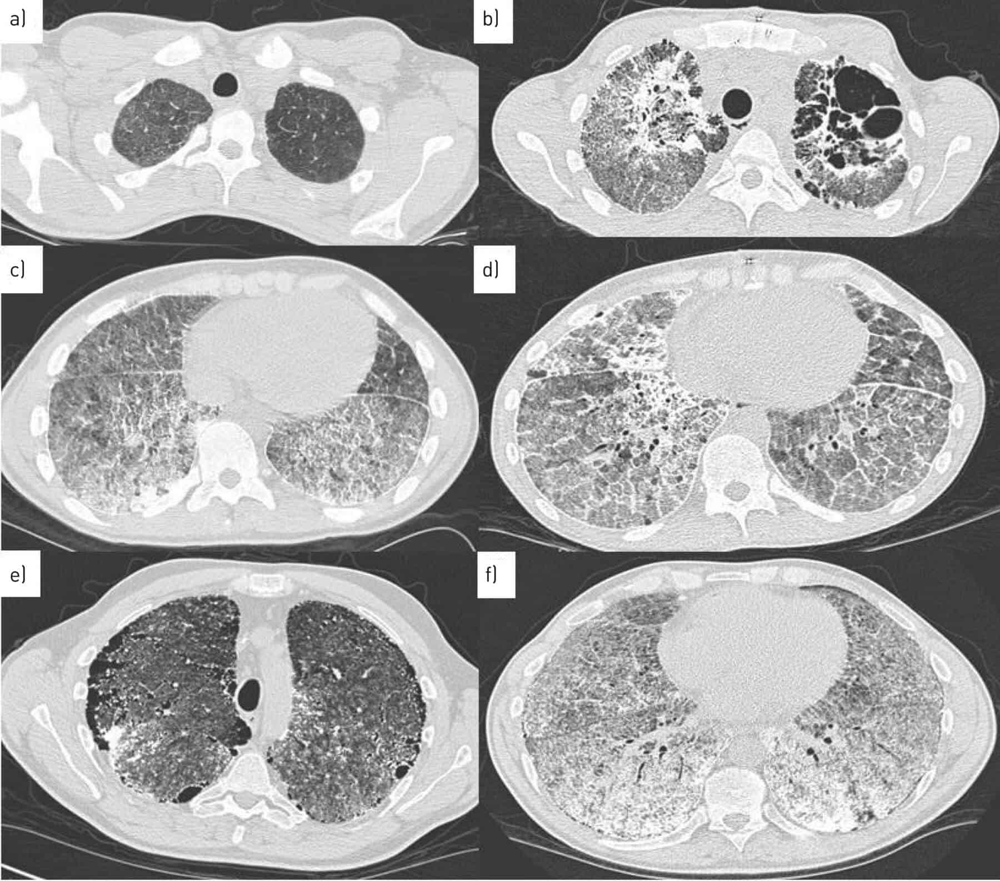
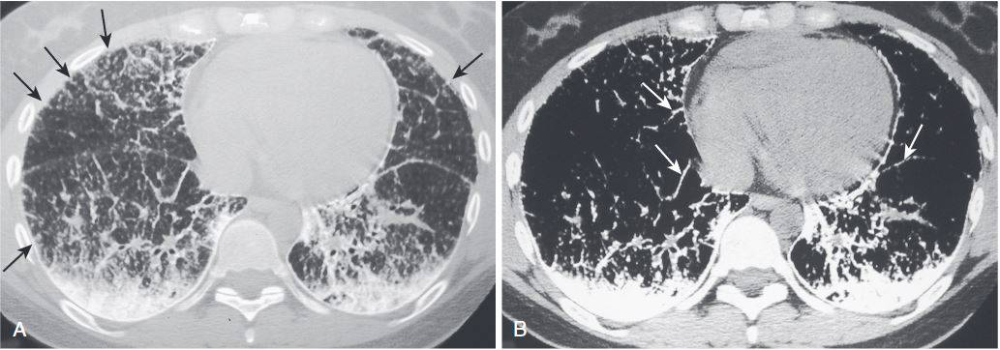
=> Case lâm sàng 1: dấu hiệu màng phổi đen
=> Case lâm sàng 2: dấu hiệu màng phổi đen
=> Case lâm sàng 3:
=> Case lâm sàng 4:
=> Case lâm sàng 5:
IV. Phân biệt
* Bụi phổi silic
– Bụi phổi silic (silicosis) là bệnh phổi kẽ xơ hóa do hít bụi silica tinh thể:
+ Nguy cơ nghề nghiệp gặp ở người khai thác, khoan, cắt hoặc mài đá; phun cát; khai khoáng, kể cả mỏ than khi có phơi nhiễm silica; sản xuất thủy tinh và gốm sứ.
+ Đại thực bào phế nang thực bào các hạt silica nhưng không loại bỏ được, dẫn đến tổn thương tế bào, viêm mạn và hình thành các nốt xơ hóa. Cơ chế này khác với vi sỏi calci phosphat lắng trong lòng phế nang ở sỏi phế nang.
– Đặc điểm hình ảnh:
+ Thể đơn thuần thường có nhiều nốt bờ rõ, tròn hoặc không đều, kích thước 1–10 mm, ưu thế thùy trên và có thể phân bố theo đường bạch huyết; nốt có thể vôi hóa.
+ Khi tiến triển thành xơ hóa khối tiến triển (progressive massive fibrosis, PMF), các nốt hợp lưu thành khối xơ hóa lớn hơn 1 cm, thường ở thùy trên, gây biến dạng cấu trúc phổi và giảm thể tích; đôi khi có hang.
+ Hạch rốn phổi hoặc trung thất có thể to, đôi khi vôi hóa ngoại vi dạng vỏ trứng (eggshell calcification).
+ Hội chứng Caplan (Caplan syndrome) là bệnh bụi phổi kèm viêm khớp dạng thấp, có thể biểu hiện bằng các nốt ngoại vi lớn, đôi khi hoại tử hoặc tạo hang.
+ Thể cấp tính (acute silicosis, silicoproteinosis) thường liên quan phơi nhiễm silica cường độ cao, gây tổn thương khoảng khí lan tỏa, có thể có kính mờ hoặc kiểu hình lát đá và giống bệnh protein phế nang.
– Phân biệt với sỏi phế nang: Bụi phổi silic được ủng hộ bởi tiền sử phơi nhiễm nghề nghiệp, nốt ưu thế thùy trên theo phân bố quanh bạch huyết, hạch vôi hóa và/hoặc PMF; sỏi phế nang thường có vô số vi nốt vôi hóa trong phế nang lan tỏa hai phổi, thường rõ ở vùng giữa và dưới, không có bối cảnh phơi nhiễm silica. Hai bệnh có thể cùng biểu hiện bằng nốt phổi vôi hóa; CLVT ngực lát mỏng giúp đánh giá phân bố nốt, hạch và khối xơ hóa, nhưng cần đối chiếu với tiền sử nghề nghiệp.

– Cạm bẫy: Vôi hóa hạch dạng vỏ trứng gợi ý bụi phổi silic nhưng không đặc hiệu tuyệt đối; dấu hiệu này cũng có thể gặp trong các bệnh khác. Không dùng riêng dấu hiệu này để phân biệt với sỏi phế nang.
* Viêm phổi thủy đậu
– Viêm phổi thủy đậu (varicella pneumonia) là biến chứng của nhiễm virus varicella-zoster (VZV), thường do virus lan theo đường máu đến phổi:
+ Nguy cơ cao hơn ở người lớn chưa có miễn dịch, người suy giảm miễn dịch, phụ nữ mang thai, người hút thuốc và người có bệnh phổi mạn.
+ Tổn thương mô học có thể gồm viêm kẽ, hoại tử biểu mô phế nang và tổn thương mao mạch; khác với sỏi phế nang là các vi sỏi calci phosphat lắng trong lòng phế nang.
+ Triệu chứng hô hấp thường xuất hiện trong vòng 1–6 ngày sau phát ban, nhưng đôi khi khởi phát trước ban; cần khai thác tiền sử tiếp xúc và phát ban dạng mụn nước.
– Đặc điểm hình ảnh:
+ Giai đoạn cấp thường có nhiều nốt mờ hai phổi, bờ không rõ, thường kích thước 5–10 mm, có thể hợp lưu thành đám đông đặc hoặc kèm kính mờ. Hạch rốn phổi và tràn dịch màng phổi lượng ít có thể gặp.
+ Tổn thương có thể giảm nhanh sau khi ban lui nhưng cũng có thể tồn tại nhiều tháng; diễn tiến hình ảnh này khác với vi sỏi vôi hóa dai dẳng của sỏi phế nang.
– Di chứng muộn: Viêm phổi thủy đậu đã lành có thể để lại các nốt vôi hóa nhỏ, thường khoảng 1–3 mm, rải rác hai phổi và có thể ưu thế vùng đáy; thường không kèm vôi hóa hạch.
– Phân biệt với sỏi phế nang: Tiền sử thủy đậu từ nhiều năm trước và các nốt vôi hóa 1–3 mm gợi ý di chứng viêm phổi thủy đậu; sỏi phế nang thường có vô số vi nốt vôi hóa nhỏ hơn, phân bố lan tỏa trong phế nang, có thể kèm vôi hóa vách liên tiểu thùy hoặc biến đổi dạng nang dưới màng phổi. Hai bệnh có thể chồng lấp về hình ảnh nốt vôi hóa; cần đối chiếu bệnh sử, phim cũ và các dấu hiệu phối hợp, không dựa vào vôi hóa đơn độc.
– Cạm bẫy:
+ Nốt vôi hóa lan tỏa không đặc hiệu cho sỏi phế nang; di chứng thủy đậu có thể xuất hiện nhiều năm sau đợt nhiễm và dễ bị bỏ sót tiền sử.
+ Khi bệnh sử và hình ảnh điển hình, CLVT ngực lát mỏng giúp đánh giá kích thước, phân bố và các dấu hiệu phối hợp, có thể hạn chế sinh thiết không cần thiết. Liều chụp cần tối ưu theo chỉ định; CLVT không xác định vi sỏi ở cấp độ vi cấu trúc.
=> Case lâm sàng 1:


=> Case lâm sàng 2:


V. Tiên lượng & Điều trị
– Tiên lượng: Diễn tiến thay đổi đáng kể giữa các người bệnh, thường chậm trong nhiều năm hoặc nhiều thập niên:
+ Giai đoạn sớm có thể ít triệu chứng dù tổn thương hình ảnh lan rộng; mức độ bất thường trên hình ảnh không luôn tương ứng với suy giảm chức năng hô hấp.
+ Một số người bệnh tiến triển đến xơ hóa phổi, giảm thông khí kiểu hạn chế, giảm khả năng khuếch tán, giảm oxy máu và tăng áp phổi; giai đoạn muộn có thể dẫn đến suy hô hấp mạn và tâm phế mạn. Chưa có mô hình tiên lượng đã được xác nhận để dự đoán chính xác diễn tiến ở từng người bệnh.
– Điều trị:
+ Hiện chưa có thuốc được chứng minh làm tan hoặc loại bỏ vi sỏi. Etidronate và các bisphosphonate khác, corticosteroid, sodium thiosulfate, hạn chế phosphat trong chế độ ăn và rửa toàn bộ phổi mới chỉ được khảo sát qua các báo cáo nhỏ, kết quả không nhất quán; không sử dụng thường quy. Rửa phế quản–phế nang không phải phương pháp điều trị loại bỏ vi sỏi.
+ Điều trị hỗ trợ gồm tiêm chủng theo khuyến cáo, ngừng hút thuốc, tránh phơi nhiễm bụi có hại, phục hồi chức năng hô hấp và bổ sung oxy khi có giảm oxy máu lúc nghỉ hoặc gắng sức. Phát hiện và xử trí các biến chứng tim phổi theo tình trạng lâm sàng.
+ Ghép phổi là phương pháp duy nhất đã chứng minh hiệu quả ở bệnh giai đoạn cuối. Cân nhắc chuyển đánh giá ghép khi chức năng hô hấp suy giảm tiến triển, nhu cầu oxy tăng, xơ hóa lan rộng hoặc xuất hiện tăng áp phổi; quyết định dựa trên đánh giá đa chuyên khoa và tiêu chuẩn chọn ứng viên ghép hiện hành. Vôi hóa nhu mô và dính màng phổi có thể làm phẫu thuật phức tạp hơn.
– Theo dõi:
+ Đánh giá triệu chứng, chức năng hô hấp gồm hô hấp ký và khả năng khuếch tán, oxy hóa máu và khả năng gắng sức; siêu âm tim khi nghi ngờ tăng áp phổi hoặc suy tim phải.
+ Theo dõi X-quang hoặc CLVT độ phân giải cao khi kết quả có khả năng ảnh hưởng đến đánh giá tiến triển hoặc xử trí; chọn thời điểm và liều chụp phù hợp, không có khoảng chụp định kỳ chuẩn được xác lập riêng cho PAM.
+ Trước khi đánh giá ghép phổi, đối chiếu CLVT với chức năng hô hấp, mức độ giảm oxy máu và đánh giá tim phổi. Tư vấn di truyền có thể được cân nhắc cho người bệnh và gia đình khi xác định biến thể gây bệnh SLC34A2.
Tài liệu tham khảo
* Sỏi phế nang – PGS.TS Phạm Ngọc Hoa
* Pulmonary alveolar microlithiasis presenting with crazy- paving pattern on high resolution CT – E L GASPARETTO
* Pulmonary Alveolar Microlithiasis: A Case Report with Emphasis on Imaging Findings – Guilherme Abdalla
* Pulmonary alveolar microlithiasis diagnosed with radiography, CT, and bone scintigraphy – EmadAlkhankanMD
* Pulmonary Alveolar Microlithiasis – Clinico-Radiological dissociation – A case report with Radiological review – Sanjay Mhalasakant Khaladkar
* Pulmonary alveolar microlithiasis: review of the 1022 cases reported worldwide – Giuseppe Castellana, Giorgio Castellana, Mattia Gentile, Roberto Castellana, Onofrio Resta
* Pulmonary Alveolar Microlithiasis: AIRP Best Cases in Radiologic-Pathologic Correlation – Joseph A. Delic , Carl R. Fuhrman, Humberto E. Trejo Bittar
* Interlobular septal thickening at high-resolution computed tomography – I. Herr
* Pulmonary calcifications: Imaging features and differential diagnosis – L. Mazzamurro
* Chest-X-ray and HRCT findings in the diagnosis of pulmonary alveolar microlithiasis – M. Calabrese; Nocera Inferiore, SA/IT
* Diagnosis of Pulmonary Alveolar Microlithiasis, Can Imaging Alone Help? – D. Alhassan, S. Al Subaie, Z. Ahmed; Dhahran/SA
* Pulmonary alveolar microlithiasis – I. Willekens, B. Ilsen, J. de Mey; Brussels/BE
* CT and MRI of the Whole Body, 6e – John R. Haaga, MD